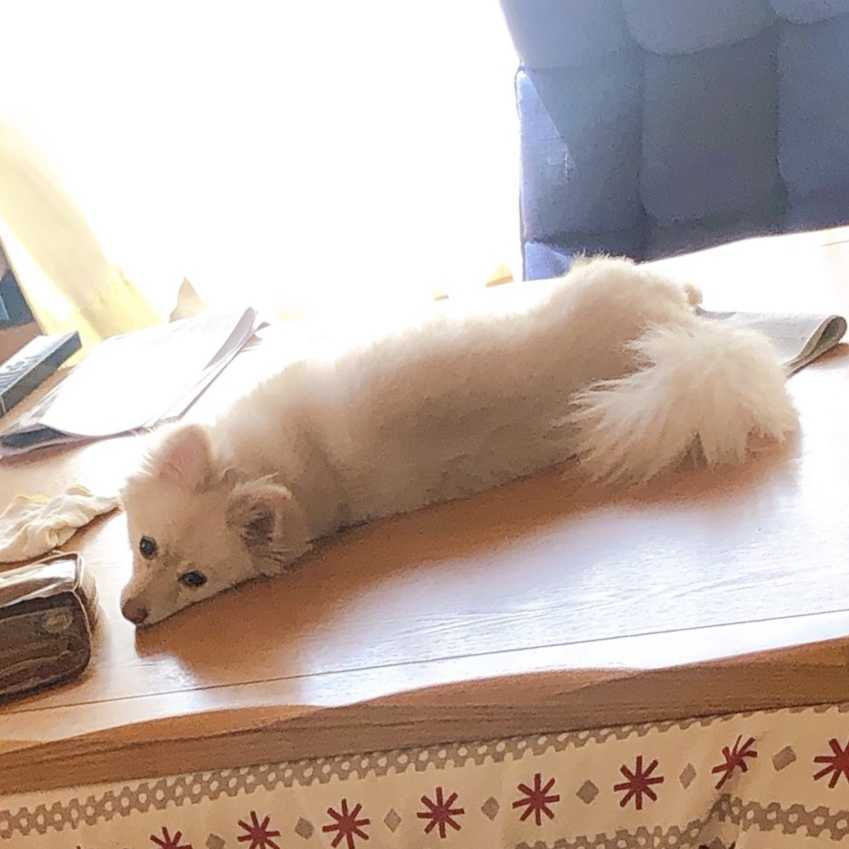
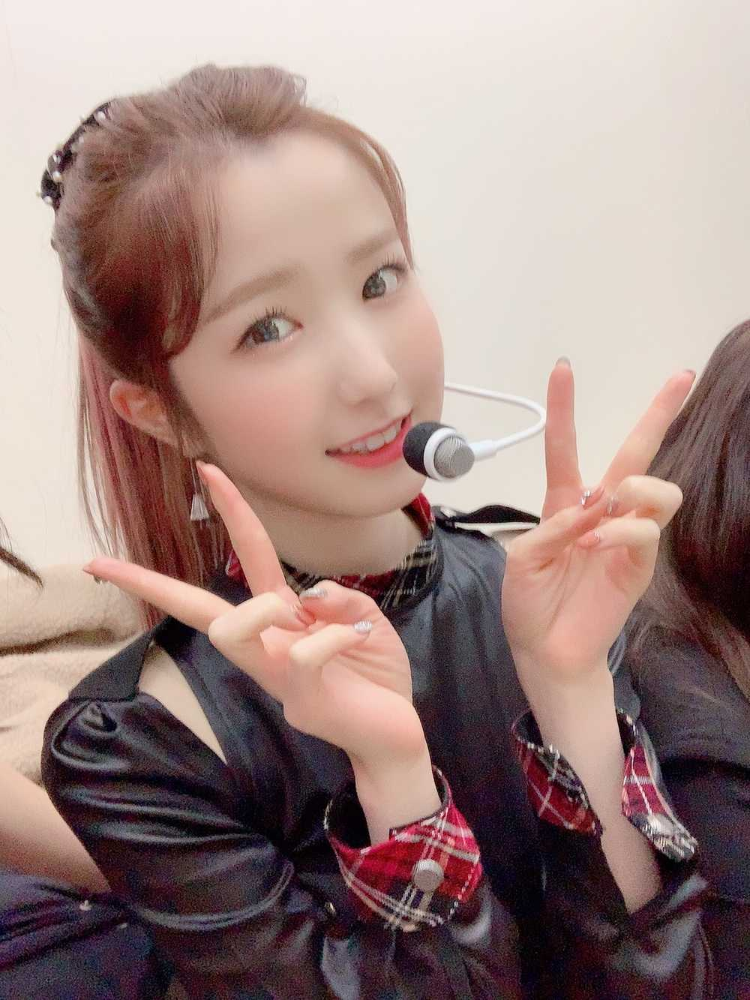

こんばんは🌝
ひいだよ🍓

コタツの上で寝っ転がりながら
こっち見てる👀
コタツの上散らかっててごめん🙇♀️笑
生活感丸出しですな🙃
写真撮るときは背景もう少し気にしてから撮ってください〜〜
（姉に届け）
今日はなんと20℃もありました😳
なのに気づかず
分厚いコート着ちゃった🙂
12人の中でたった私1人だけ😂
寒がりの私でも暑いまではいかないけど
着る必要はなかったなと思いました☺️💦
では本日2回目の質問タイム🧸
Q. 히토마 めがねの度数はいくつなの?🧐
A. 眼鏡の度数はわからないけど
コンタクトの度数なら！！！！！！
右が-5.0で左が-4.5かな🙂
裸眼だとみんなが
のっぺらぼうに見えます😱😱
それが怖いのでいつも
寝る直前にコンタクト外す😰
メガネつけるのもあまり好きじゃないので
寝る前に本読むときか
朝起きて顔洗う前くらいしかしませんね🙄
Q. そのメガネは自分で選んだの？？
形とかどうやって決めた？
A. マネージャーのオンニと選びました😚
私は優柔不断なので1人では決められません👽
前は結構重いの使ってたんだけど
今回軽いもの買ったらそれもそれで
ちょっと不便でした😂
重すぎても軽すぎてもダメだということを
学びました😅
Q.エビフライの尻尾食べる派？
A. いや食べないでしょ〜っ🙋🏻♀️
食べろって言われたら食べるけど
そうでなければ残します😅
だって口の中痛いじゃんんんん💥
でもうちのお兄ちゃんは確か
尻尾まで食べてた気がする🤭
海老フライはプリプリの身の部分が
美味しいのじゃ〜〜🍤
逆にひいからの質問いいですか？？
이호は目玉焼きに何をかけて食べますか？
これ結構いろいろいると思うんだよね😎😎
醤油が一番多いのかなって思うけど
私は日本にいるときはずっと
ウスターソースでしたㅋㅋㅋㅋㅋㅋ
でも最近は何もかけずに食べてます🤗
ケチャップの人もいるのかな？？
もし他のものかける〜ってのがあったら
すごく知りたい🥺🥺🥺🥺
ではまたっ
질문 타임2!!!
Q. 짜장면 or 짜장밥 어느쪽이 취향이에요~?ㅎㅎ
A. 저는 짜장밤🥺
무조건 계란후라이랑 같이 먹어야돼요!!
면도 좋지만... 면이라면 짬뽕을 더 좋아해요 :)
요즘 해산물을 너무 좋아해서🐙🦑🦐
아이즈원쥬! 에서 먹었던 크림새우 먹고싶당...
Q. 히토미언니는 즐겨 보는 만화책이 있나요? 있다면 알려주세요!
A. 저는 평소에 만화를 읽지 않지만 초등학생 때
“너에게 닿기를” （君に届け）라는 만화가
너무 좋았어요🥰
심쿵 심쿵💘
강추~😘
Q. 앞머리 다시 내릴 생각은 없나용?
A. 지금은 없어요!!!
제 주변에 있는 사람들은 다
앞머리 없는게 예쁘다고 하니까😇
주변도 그렇고 저도 그렇게 생각해요ㅎㅎㅎ
이호는 (은) 앞머리 있는 토미가 좋아요??
없는 토미가 좋아요?? 😀

カン姉さんが撮ってくれたよ😊ㅋㅋㅋㅋ
ばいばーい👋🏻
ひいまる🥟